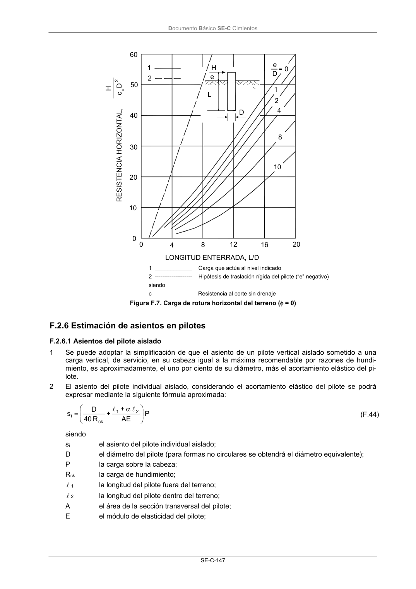

DB-SE-C Cimientos · edición 2019-12-20 · capa oficial
Documento DB-SE-C-oficial · SHA-256 del PDF a71133f4b0dca253e45ea3071c70f2a512354bcc5cd841bf89b1a502f567ac5e
Copia fiel del PDF fuente · Fuente oficial
Ficha de la disposición en la fuente oficial
Formatos: JSON del segmento · Markdown
F.2.6 Estimación de asientos en pilotes F.2.6.1 Asientos del pilote aislado 1 Se puede adoptar la simplificación de que el asiento de un pilote vertical aislado sometido a una carga vertical, de servicio, en su cabeza igual a la máxima recomendable por razones de hundi- miento, es aproximadamente, el uno por ciento de su diámetro, más el acortamiento elástico del pi- lote. 2 El asiento del pilote individual aislado, considerando el acortamiento elástico del pilote se podrá expresar mediante la siguiente fórmula aproximada: P AE + + R 40 D s 2 1 ck i l l (F.44) siendo si el asiento del pilote individual aislado; D el diámetro del pilote (para formas no circulares se obtendrá el diámetro equivalente); P la carga sobre la cabeza; Rck la carga de hundimiento; l1 la longitud del pilote fuera del terreno; l2 la longitud del pilote dentro del terreno; A el área de la sección transversal del pilote; E el módulo de elasticidad del pilote; Documento Básico SE-C Cimientos SE-C-148 un parámetro variable según el tipo de transmisión de cargas al terreno, =1 para pilotes que trabajan principalmente por punta y =0.5 para pilotes flotantes. Para situaciones in- termedias, se adoptará el siguiente valor de : = ck R 1 (0,5 Rfk + Rpk) (F.45) donde Rpk es la carga de hundimiento por punta; Rfk es la carga de hundimiento por fuste. F.2.6.2 Consideración del efecto grupo 1 En los grupos de pilotes, y debido a la interferencia de las cargas, el asiento de cada pilote puede ser mayor. Para tenerlo en cuenta, se podrán adoptar las siguientes simplificaciones: 2 Para pilotes columna, trabajando por punta en roca, separados más de tres diámetros, el efecto grupo se considera despreciable. 3 Para otras situaciones se puede suponer que toda la carga del grupo está uniformemente repartida en un plano situado a la profundidad "z" bajo la superficie del terreno: z = · l2 (F.46) con los significados de "" y " l2" indicados anteriormente y con unas dimensiones transversales B1 x L1 dadas por: B1 = Bgrupo + (1 - ) l2 (F.47) L1 = Lgrupo + (1 - ) l2 (F.48) siendo Bgrupo y Lgrupo las dimensiones del grupo, considerando planos exteriores tangentes a los pilo- tes externos del grupo. 4 El cálculo del asiento debido a esta carga vertical repartida en profundidad se estimará de acuerdo con los procedimientos generales de cálculo de asientos de cimentaciones superficiales.
